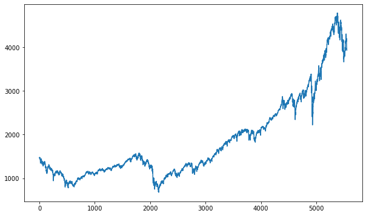
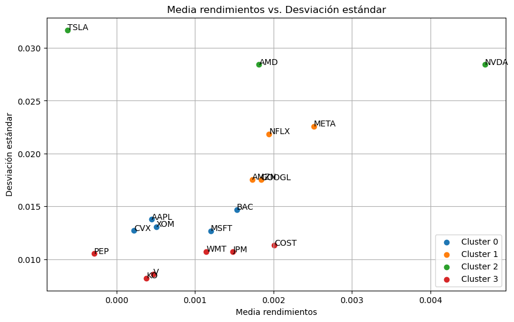
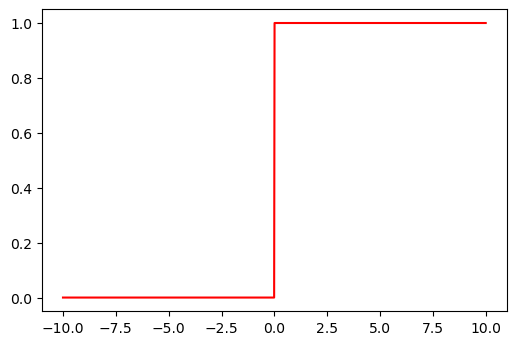
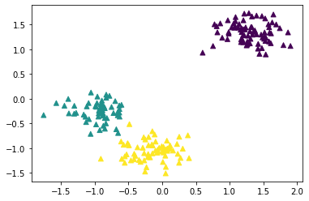
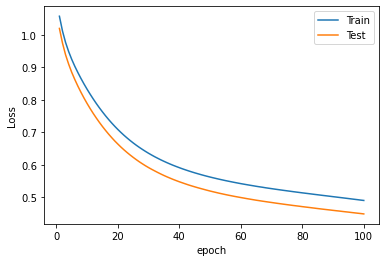

RNA en Keras para clasificación multiclase¶
En los problemas de clasificación multiclase los datos deben clasificarse en una sola categoría. Cada clase o categoría es excluyente.
Los clasificadores binarios distinguen entre dos clases y los clasificadores multiclase pueden distinguir entre más de dos clases.
En este tipo de problemas el output layer debe tener la función de
activación "softmax" para que genere una distribución de
probabilidad sobre las N clases de salida. También, el output layer debe
tener una neurona por cada clase de salida. La red arrojará un resultado
para cada clase y se selecciona la clase de mayor valor para cada
instancia.
La función de pérdida que se usa es "categorical_crossentropy", pero
si las clases son números enteros se usa la función de pérdida
"sparse_categorical_crossentropy".
Recomendación: evitar crear cuellos de botella de información en el modelo con capas demasiado pequeñas, es decir, en la primera capa oculta tener al menos la misma cantidad de neuronas que variables de entrada.
import numpy as np
import matplotlib.pyplot as plt
from sklearn.datasets import make_blobs
from collections import Counter
X, y = make_blobs(n_samples=1000, centers=3, random_state=1)
print(X.shape, y.shape)
(1000, 2) (1000,)
Cantidad de instancias por etiqueta:
counter = Counter(y)
counter
Counter({0: 334, 1: 333, 2: 333})
for label, _ in counter.items():
row_ix = np.where(y == label)
plt.scatter(X[row_ix, 0], X[row_ix, 1], label=str(label))
plt.legend()
plt.show()

Conjunto de train y test:¶
from sklearn.model_selection import train_test_split
X_train, X_test, y_train, y_test = train_test_split(X, y, test_size=0.2, random_state=0)
X.shape
(1000, 2)
X_train.shape
(800, 2)
y_train.shape
(800,)
for label, _ in counter.items():
row_ix = np.where(y_train == label)
plt.scatter(X_train[row_ix, 0], X_train[row_ix, 1], label=str(label))
plt.legend()
plt.title("Conjunto de train")
plt.show()

for label, _ in counter.items():
row_ix = np.where(y_test == label)
plt.scatter(X_test[row_ix, 0], X_test[row_ix, 1], label=str(label))
plt.legend()
plt.title("Conjunto de test")
plt.show()

Estandarización de las variables:¶
from sklearn.preprocessing import StandardScaler
sc = StandardScaler()
sc.fit(X_train)
X_train = sc.transform(X_train)
X_test = sc.transform(X_test)
X_train[0:5]
array([[-0.5678604 , -0.03092941],
[ 1.46681441, 1.5127014 ],
[-1.21525921, -0.03571854],
[-0.08449132, -1.08775093],
[-0.47261021, -0.98395669]])
X_test[0:5]
array([[ 1.198862 , 1.28815007],
[-0.48566926, -0.51299027],
[ 0.03316267, -1.01816218],
[-0.82973607, 0.02035837],
[-0.6314823 , -0.36109362]])
from keras.models import Sequential
from keras.layers import Dense
Arquitectura de la red:¶
Hay dos variables de entrada y tres clases. La primera capa oculta debe
tener al menos dos neuronas y la capa de salida debe tener tres
neuronas. La función de activación debe ser "softmax" y la función
de pérdida "sparse_categorical_crossentropy".
model = Sequential()
model.add(Dense(2, activation="sigmoid", input_shape=(X.shape[1],)))
model.add(Dense(3, activation="softmax"))
model.compile(
loss="sparse_categorical_crossentropy", optimizer="sgd", metrics=["accuracy"]
)
history = model.fit(
X_train,
y_train,
validation_data=(X_test, y_test),
epochs=100,
batch_size=10,
verbose=1,
)
Epoch 1/100
80/80 [==============================] - 1s 8ms/step - loss: 1.2746 - accuracy: 0.3338 - val_loss: 1.2538 - val_accuracy: 0.3300
Epoch 2/100
80/80 [==============================] - 0s 5ms/step - loss: 1.1960 - accuracy: 0.3175 - val_loss: 1.1802 - val_accuracy: 0.2800
Epoch 3/100
80/80 [==============================] - 0s 5ms/step - loss: 1.1489 - accuracy: 0.1213 - val_loss: 1.1331 - val_accuracy: 0.0300
Epoch 4/100
80/80 [==============================] - 0s 4ms/step - loss: 1.1166 - accuracy: 0.0125 - val_loss: 1.0988 - val_accuracy: 0.0000e+00
Epoch 5/100
80/80 [==============================] - 0s 4ms/step - loss: 1.0908 - accuracy: 0.1787 - val_loss: 1.0705 - val_accuracy: 0.3900
Epoch 6/100
80/80 [==============================] - 0s 4ms/step - loss: 1.0678 - accuracy: 0.3288 - val_loss: 1.0448 - val_accuracy: 0.4050
Epoch 7/100
80/80 [==============================] - 0s 4ms/step - loss: 1.0458 - accuracy: 0.3425 - val_loss: 1.0206 - val_accuracy: 0.4300
Epoch 8/100
80/80 [==============================] - 0s 4ms/step - loss: 1.0238 - accuracy: 0.4250 - val_loss: 0.9965 - val_accuracy: 0.4650
Epoch 9/100
80/80 [==============================] - 0s 5ms/step - loss: 1.0016 - accuracy: 0.4850 - val_loss: 0.9725 - val_accuracy: 0.5250
Epoch 10/100
80/80 [==============================] - 0s 5ms/step - loss: 0.9789 - accuracy: 0.5612 - val_loss: 0.9482 - val_accuracy: 0.6000
Epoch 11/100
80/80 [==============================] - 0s 4ms/step - loss: 0.9559 - accuracy: 0.6187 - val_loss: 0.9234 - val_accuracy: 0.6300
Epoch 12/100
80/80 [==============================] - 0s 4ms/step - loss: 0.9322 - accuracy: 0.6425 - val_loss: 0.8984 - val_accuracy: 0.6750
Epoch 13/100
80/80 [==============================] - 0s 4ms/step - loss: 0.9086 - accuracy: 0.7200 - val_loss: 0.8735 - val_accuracy: 0.8500
Epoch 14/100
80/80 [==============================] - 0s 4ms/step - loss: 0.8851 - accuracy: 0.8525 - val_loss: 0.8486 - val_accuracy: 0.9700
Epoch 15/100
80/80 [==============================] - 0s 4ms/step - loss: 0.8616 - accuracy: 0.9650 - val_loss: 0.8243 - val_accuracy: 0.9950
Epoch 16/100
80/80 [==============================] - 0s 4ms/step - loss: 0.8386 - accuracy: 0.9875 - val_loss: 0.8004 - val_accuracy: 0.9900
Epoch 17/100
80/80 [==============================] - 0s 4ms/step - loss: 0.8161 - accuracy: 0.9075 - val_loss: 0.7774 - val_accuracy: 0.9700
Epoch 18/100
80/80 [==============================] - 0s 4ms/step - loss: 0.7946 - accuracy: 0.8662 - val_loss: 0.7553 - val_accuracy: 0.9600
Epoch 19/100
80/80 [==============================] - 0s 3ms/step - loss: 0.7738 - accuracy: 0.9350 - val_loss: 0.7337 - val_accuracy: 0.9200
Epoch 20/100
80/80 [==============================] - 0s 4ms/step - loss: 0.7540 - accuracy: 0.8650 - val_loss: 0.7133 - val_accuracy: 0.8800
Epoch 21/100
80/80 [==============================] - 0s 4ms/step - loss: 0.7351 - accuracy: 0.8863 - val_loss: 0.6940 - val_accuracy: 0.8400
Epoch 22/100
80/80 [==============================] - 0s 4ms/step - loss: 0.7174 - accuracy: 0.7812 - val_loss: 0.6760 - val_accuracy: 0.8400
Epoch 23/100
80/80 [==============================] - 0s 4ms/step - loss: 0.7007 - accuracy: 0.7475 - val_loss: 0.6591 - val_accuracy: 0.8400
Epoch 24/100
80/80 [==============================] - 0s 4ms/step - loss: 0.6851 - accuracy: 0.7962 - val_loss: 0.6432 - val_accuracy: 0.8300
Epoch 25/100
80/80 [==============================] - 0s 4ms/step - loss: 0.6704 - accuracy: 0.7862 - val_loss: 0.6283 - val_accuracy: 0.8300
Epoch 26/100
80/80 [==============================] - 0s 3ms/step - loss: 0.6566 - accuracy: 0.7900 - val_loss: 0.6145 - val_accuracy: 0.8300
Epoch 27/100
80/80 [==============================] - 0s 4ms/step - loss: 0.6438 - accuracy: 0.7812 - val_loss: 0.6015 - val_accuracy: 0.8300
Epoch 28/100
80/80 [==============================] - 0s 5ms/step - loss: 0.6317 - accuracy: 0.7550 - val_loss: 0.5896 - val_accuracy: 0.8500
Epoch 29/100
80/80 [==============================] - 0s 6ms/step - loss: 0.6204 - accuracy: 0.8200 - val_loss: 0.5782 - val_accuracy: 0.8500
Epoch 30/100
80/80 [==============================] - 0s 4ms/step - loss: 0.6098 - accuracy: 0.7812 - val_loss: 0.5677 - val_accuracy: 0.8600
Epoch 31/100
80/80 [==============================] - 0s 4ms/step - loss: 0.5999 - accuracy: 0.8112 - val_loss: 0.5578 - val_accuracy: 0.8600
Epoch 32/100
80/80 [==============================] - 0s 4ms/step - loss: 0.5903 - accuracy: 0.8712 - val_loss: 0.5482 - val_accuracy: 0.8600
Epoch 33/100
80/80 [==============================] - 0s 4ms/step - loss: 0.5814 - accuracy: 0.8650 - val_loss: 0.5392 - val_accuracy: 0.8600
Epoch 34/100
80/80 [==============================] - 0s 5ms/step - loss: 0.5729 - accuracy: 0.8625 - val_loss: 0.5308 - val_accuracy: 0.8700
Epoch 35/100
80/80 [==============================] - 0s 6ms/step - loss: 0.5647 - accuracy: 0.8512 - val_loss: 0.5228 - val_accuracy: 0.9050
Epoch 36/100
80/80 [==============================] - 0s 5ms/step - loss: 0.5568 - accuracy: 0.9125 - val_loss: 0.5149 - val_accuracy: 0.9000
Epoch 37/100
80/80 [==============================] - 0s 4ms/step - loss: 0.5493 - accuracy: 0.8325 - val_loss: 0.5077 - val_accuracy: 0.9150
Epoch 38/100
80/80 [==============================] - 0s 5ms/step - loss: 0.5419 - accuracy: 0.9038 - val_loss: 0.5005 - val_accuracy: 0.9250
Epoch 39/100
80/80 [==============================] - 0s 6ms/step - loss: 0.5348 - accuracy: 0.9300 - val_loss: 0.4934 - val_accuracy: 0.9250
Epoch 40/100
80/80 [==============================] - 0s 5ms/step - loss: 0.5278 - accuracy: 0.9087 - val_loss: 0.4866 - val_accuracy: 0.9350
Epoch 41/100
80/80 [==============================] - 0s 6ms/step - loss: 0.5208 - accuracy: 0.9137 - val_loss: 0.4800 - val_accuracy: 0.9400
Epoch 42/100
80/80 [==============================] - 0s 5ms/step - loss: 0.5141 - accuracy: 0.9463 - val_loss: 0.4733 - val_accuracy: 0.9500
Epoch 43/100
80/80 [==============================] - 0s 6ms/step - loss: 0.5072 - accuracy: 0.9262 - val_loss: 0.4669 - val_accuracy: 0.9550
Epoch 44/100
80/80 [==============================] - 0s 5ms/step - loss: 0.5005 - accuracy: 0.9638 - val_loss: 0.4602 - val_accuracy: 0.9550
Epoch 45/100
80/80 [==============================] - 0s 6ms/step - loss: 0.4937 - accuracy: 0.9550 - val_loss: 0.4536 - val_accuracy: 0.9550
Epoch 46/100
80/80 [==============================] - 0s 4ms/step - loss: 0.4869 - accuracy: 0.9550 - val_loss: 0.4472 - val_accuracy: 0.9600
Epoch 47/100
80/80 [==============================] - 0s 3ms/step - loss: 0.4801 - accuracy: 0.9613 - val_loss: 0.4408 - val_accuracy: 0.9600
Epoch 48/100
80/80 [==============================] - 0s 3ms/step - loss: 0.4732 - accuracy: 0.9712 - val_loss: 0.4341 - val_accuracy: 0.9600
Epoch 49/100
80/80 [==============================] - 0s 4ms/step - loss: 0.4662 - accuracy: 0.9737 - val_loss: 0.4274 - val_accuracy: 0.9600
Epoch 50/100
80/80 [==============================] - 0s 4ms/step - loss: 0.4592 - accuracy: 0.9675 - val_loss: 0.4208 - val_accuracy: 0.9600
Epoch 51/100
80/80 [==============================] - 0s 3ms/step - loss: 0.4521 - accuracy: 0.9775 - val_loss: 0.4141 - val_accuracy: 0.9600
Epoch 52/100
80/80 [==============================] - 0s 5ms/step - loss: 0.4448 - accuracy: 0.9800 - val_loss: 0.4073 - val_accuracy: 0.9650
Epoch 53/100
80/80 [==============================] - 0s 6ms/step - loss: 0.4376 - accuracy: 0.9812 - val_loss: 0.4004 - val_accuracy: 0.9650
Epoch 54/100
80/80 [==============================] - 0s 6ms/step - loss: 0.4302 - accuracy: 0.9812 - val_loss: 0.3936 - val_accuracy: 0.9700
Epoch 55/100
80/80 [==============================] - 0s 5ms/step - loss: 0.4228 - accuracy: 0.9837 - val_loss: 0.3867 - val_accuracy: 0.9700
Epoch 56/100
80/80 [==============================] - 0s 5ms/step - loss: 0.4153 - accuracy: 0.9862 - val_loss: 0.3798 - val_accuracy: 0.9700
Epoch 57/100
80/80 [==============================] - 0s 5ms/step - loss: 0.4078 - accuracy: 0.9900 - val_loss: 0.3729 - val_accuracy: 0.9750
Epoch 58/100
80/80 [==============================] - 0s 5ms/step - loss: 0.4002 - accuracy: 0.9925 - val_loss: 0.3659 - val_accuracy: 0.9750
Epoch 59/100
80/80 [==============================] - 0s 6ms/step - loss: 0.3927 - accuracy: 0.9925 - val_loss: 0.3589 - val_accuracy: 0.9750
Epoch 60/100
80/80 [==============================] - 0s 5ms/step - loss: 0.3851 - accuracy: 0.9950 - val_loss: 0.3520 - val_accuracy: 0.9750
Epoch 61/100
80/80 [==============================] - 0s 5ms/step - loss: 0.3776 - accuracy: 0.9962 - val_loss: 0.3451 - val_accuracy: 0.9750
Epoch 62/100
80/80 [==============================] - 0s 4ms/step - loss: 0.3701 - accuracy: 0.9950 - val_loss: 0.3383 - val_accuracy: 0.9750
Epoch 63/100
80/80 [==============================] - 0s 4ms/step - loss: 0.3626 - accuracy: 0.9950 - val_loss: 0.3315 - val_accuracy: 0.9750
Epoch 64/100
80/80 [==============================] - 0s 3ms/step - loss: 0.3553 - accuracy: 0.9962 - val_loss: 0.3248 - val_accuracy: 0.9800
Epoch 65/100
80/80 [==============================] - 0s 4ms/step - loss: 0.3479 - accuracy: 0.9962 - val_loss: 0.3181 - val_accuracy: 0.9850
Epoch 66/100
80/80 [==============================] - 0s 4ms/step - loss: 0.3408 - accuracy: 0.9962 - val_loss: 0.3116 - val_accuracy: 0.9850
Epoch 67/100
80/80 [==============================] - 0s 4ms/step - loss: 0.3337 - accuracy: 0.9962 - val_loss: 0.3051 - val_accuracy: 0.9900
Epoch 68/100
80/80 [==============================] - 0s 4ms/step - loss: 0.3268 - accuracy: 0.9962 - val_loss: 0.2988 - val_accuracy: 0.9900
Epoch 69/100
80/80 [==============================] - 0s 4ms/step - loss: 0.3199 - accuracy: 0.9975 - val_loss: 0.2926 - val_accuracy: 0.9900
Epoch 70/100
80/80 [==============================] - 0s 4ms/step - loss: 0.3131 - accuracy: 0.9975 - val_loss: 0.2865 - val_accuracy: 0.9900
Epoch 71/100
80/80 [==============================] - 0s 4ms/step - loss: 0.3066 - accuracy: 0.9975 - val_loss: 0.2805 - val_accuracy: 0.9900
Epoch 72/100
80/80 [==============================] - 0s 4ms/step - loss: 0.3001 - accuracy: 0.9975 - val_loss: 0.2746 - val_accuracy: 0.9900
Epoch 73/100
80/80 [==============================] - 0s 4ms/step - loss: 0.2938 - accuracy: 0.9975 - val_loss: 0.2690 - val_accuracy: 0.9900
Epoch 74/100
80/80 [==============================] - 0s 4ms/step - loss: 0.2876 - accuracy: 0.9975 - val_loss: 0.2634 - val_accuracy: 0.9900
Epoch 75/100
80/80 [==============================] - 0s 4ms/step - loss: 0.2817 - accuracy: 0.9975 - val_loss: 0.2580 - val_accuracy: 0.9900
Epoch 76/100
80/80 [==============================] - 0s 4ms/step - loss: 0.2758 - accuracy: 0.9975 - val_loss: 0.2527 - val_accuracy: 0.9900
Epoch 77/100
80/80 [==============================] - 0s 4ms/step - loss: 0.2701 - accuracy: 0.9975 - val_loss: 0.2475 - val_accuracy: 0.9900
Epoch 78/100
80/80 [==============================] - 0s 4ms/step - loss: 0.2645 - accuracy: 0.9975 - val_loss: 0.2425 - val_accuracy: 0.9900
Epoch 79/100
80/80 [==============================] - 0s 4ms/step - loss: 0.2592 - accuracy: 0.9975 - val_loss: 0.2376 - val_accuracy: 0.9900
Epoch 80/100
80/80 [==============================] - 0s 4ms/step - loss: 0.2539 - accuracy: 0.9975 - val_loss: 0.2328 - val_accuracy: 0.9900
Epoch 81/100
80/80 [==============================] - 0s 4ms/step - loss: 0.2488 - accuracy: 0.9975 - val_loss: 0.2282 - val_accuracy: 0.9900
Epoch 82/100
80/80 [==============================] - 0s 4ms/step - loss: 0.2438 - accuracy: 0.9975 - val_loss: 0.2237 - val_accuracy: 0.9900
Epoch 83/100
80/80 [==============================] - 0s 4ms/step - loss: 0.2390 - accuracy: 0.9975 - val_loss: 0.2193 - val_accuracy: 0.9900
Epoch 84/100
80/80 [==============================] - 0s 4ms/step - loss: 0.2343 - accuracy: 0.9975 - val_loss: 0.2151 - val_accuracy: 0.9900
Epoch 85/100
80/80 [==============================] - 0s 4ms/step - loss: 0.2298 - accuracy: 0.9975 - val_loss: 0.2110 - val_accuracy: 0.9900
Epoch 86/100
80/80 [==============================] - 0s 4ms/step - loss: 0.2253 - accuracy: 0.9975 - val_loss: 0.2070 - val_accuracy: 0.9900
Epoch 87/100
80/80 [==============================] - 0s 3ms/step - loss: 0.2210 - accuracy: 0.9975 - val_loss: 0.2031 - val_accuracy: 0.9900
Epoch 88/100
80/80 [==============================] - 0s 4ms/step - loss: 0.2169 - accuracy: 0.9975 - val_loss: 0.1993 - val_accuracy: 0.9950
Epoch 89/100
80/80 [==============================] - 0s 3ms/step - loss: 0.2128 - accuracy: 0.9975 - val_loss: 0.1956 - val_accuracy: 0.9950
Epoch 90/100
80/80 [==============================] - 0s 3ms/step - loss: 0.2089 - accuracy: 0.9975 - val_loss: 0.1921 - val_accuracy: 0.9950
Epoch 91/100
80/80 [==============================] - 0s 4ms/step - loss: 0.2051 - accuracy: 0.9975 - val_loss: 0.1886 - val_accuracy: 0.9950
Epoch 92/100
80/80 [==============================] - 0s 4ms/step - loss: 0.2014 - accuracy: 0.9975 - val_loss: 0.1852 - val_accuracy: 0.9950
Epoch 93/100
80/80 [==============================] - 0s 3ms/step - loss: 0.1978 - accuracy: 0.9975 - val_loss: 0.1820 - val_accuracy: 1.0000
Epoch 94/100
80/80 [==============================] - 0s 4ms/step - loss: 0.1943 - accuracy: 0.9975 - val_loss: 0.1788 - val_accuracy: 1.0000
Epoch 95/100
80/80 [==============================] - 0s 4ms/step - loss: 0.1909 - accuracy: 0.9975 - val_loss: 0.1757 - val_accuracy: 1.0000
Epoch 96/100
80/80 [==============================] - 0s 3ms/step - loss: 0.1876 - accuracy: 0.9975 - val_loss: 0.1728 - val_accuracy: 1.0000
Epoch 97/100
80/80 [==============================] - 0s 3ms/step - loss: 0.1844 - accuracy: 0.9975 - val_loss: 0.1699 - val_accuracy: 1.0000
Epoch 98/100
80/80 [==============================] - 0s 4ms/step - loss: 0.1813 - accuracy: 0.9975 - val_loss: 0.1670 - val_accuracy: 1.0000
Epoch 99/100
80/80 [==============================] - 0s 3ms/step - loss: 0.1783 - accuracy: 0.9975 - val_loss: 0.1643 - val_accuracy: 1.0000
Epoch 100/100
80/80 [==============================] - 0s 3ms/step - loss: 0.1753 - accuracy: 0.9975 - val_loss: 0.1616 - val_accuracy: 1.0000
Evaluación de desempeño:¶
model.evaluate(X_test, y_test)
7/7 [==============================] - 0s 3ms/step - loss: 0.1616 - accuracy: 1.0000
[0.161634162068367, 1.0]
plt.plot(range(1, len(history.epoch) + 1), history.history["loss"], label="Train")
plt.plot(range(1, len(history.epoch) + 1), history.history["val_loss"], label="Test")
plt.xlabel("epoch")
plt.ylabel("Loss")
plt.legend();

plt.plot(range(1, len(history.epoch) + 1), history.history["accuracy"], label="Train")
plt.plot(range(1, len(history.epoch) + 1), history.history["val_accuracy"], label="Test")
plt.xlabel("epoch")
plt.ylabel("Loss")
plt.legend();

Predicción:¶
Para cada predicción el modelo entrega una puntuación para cada una de las clases. De esta manera, el output tendrá tres columnas por cada valor predicho. Luego, se selecciona la categoría de mayor valor para cada predicción.
y_pred = model.predict(X_test)
y_pred[0:10]
7/7 [==============================] - 0s 3ms/step
array([[0.94025993, 0.05050499, 0.009235 ],
[0.03986483, 0.4857505 , 0.4743847 ],
[0.00772406, 0.10857096, 0.88370496],
[0.08560206, 0.7920548 , 0.12234308],
[0.05696705, 0.6555281 , 0.28750482],
[0.00755953, 0.10607458, 0.88636595],
[0.06898326, 0.7961058 , 0.13491102],
[0.928811 , 0.0526115 , 0.01857739],
[0.0782757 , 0.79623514, 0.12548918],
[0.00699989, 0.10241009, 0.89059 ]], dtype=float32)
y_pred.shape
(200, 3)
y_pred[0:10]
array([[0.94025993, 0.05050499, 0.009235 ],
[0.03986483, 0.4857505 , 0.4743847 ],
[0.00772406, 0.10857096, 0.88370496],
[0.08560206, 0.7920548 , 0.12234308],
[0.05696705, 0.6555281 , 0.28750482],
[0.00755953, 0.10607458, 0.88636595],
[0.06898326, 0.7961058 , 0.13491102],
[0.928811 , 0.0526115 , 0.01857739],
[0.0782757 , 0.79623514, 0.12548918],
[0.00699989, 0.10241009, 0.89059 ]], dtype=float32)
Selección de la clase para cada predicción:
y_pred_label = np.argmax(y_pred, axis = 1)
y_pred_label[0:10]
array([0, 1, 2, 1, 1, 2, 1, 0, 1, 2], dtype=int64)
Gráfico de los valores predichos:
plt.scatter(X_test[:, 0], X_test[:, 1], c=y_pred_label, marker="^");

¿Cómo cambia el resultado si no hace el escalado de variables?
Cuello de botella en la información:¶
Cambie la arquitectura de la red donde en la primera capa oculta solo tenga una neurona.
model = Sequential()
model.add(Dense(1, activation="sigmoid", input_shape=(X.shape[1],)))
model.add(Dense(3, activation="softmax"))
model.compile(
loss="sparse_categorical_crossentropy", optimizer="sgd", metrics=["accuracy"]
)
history = model.fit(
X_train,
y_train,
validation_data=(X_test, y_test),
epochs=100,
batch_size=10,
verbose=1,
)
Epoch 1/100
80/80 [==============================] - 1s 6ms/step - loss: 1.2857 - accuracy: 0.3450 - val_loss: 1.3089 - val_accuracy: 0.2850
Epoch 2/100
80/80 [==============================] - 0s 4ms/step - loss: 1.2065 - accuracy: 0.3475 - val_loss: 1.2227 - val_accuracy: 0.3000
Epoch 3/100
80/80 [==============================] - 0s 4ms/step - loss: 1.1468 - accuracy: 0.3487 - val_loss: 1.1580 - val_accuracy: 0.2850
Epoch 4/100
80/80 [==============================] - 0s 4ms/step - loss: 1.1008 - accuracy: 0.3450 - val_loss: 1.1087 - val_accuracy: 0.2850
Epoch 5/100
80/80 [==============================] - 0s 4ms/step - loss: 1.0643 - accuracy: 0.3525 - val_loss: 1.0707 - val_accuracy: 0.3150
Epoch 6/100
80/80 [==============================] - 0s 4ms/step - loss: 1.0340 - accuracy: 0.4162 - val_loss: 1.0392 - val_accuracy: 0.4350
Epoch 7/100
80/80 [==============================] - 0s 4ms/step - loss: 1.0075 - accuracy: 0.5325 - val_loss: 1.0122 - val_accuracy: 0.5600
Epoch 8/100
80/80 [==============================] - 0s 5ms/step - loss: 0.9837 - accuracy: 0.6125 - val_loss: 0.9883 - val_accuracy: 0.6350
Epoch 9/100
80/80 [==============================] - 0s 5ms/step - loss: 0.9619 - accuracy: 0.6450 - val_loss: 0.9664 - val_accuracy: 0.6550
Epoch 10/100
80/80 [==============================] - 0s 4ms/step - loss: 0.9418 - accuracy: 0.6600 - val_loss: 0.9462 - val_accuracy: 0.6700
Epoch 11/100
80/80 [==============================] - 0s 4ms/step - loss: 0.9229 - accuracy: 0.6650 - val_loss: 0.9272 - val_accuracy: 0.6900
Epoch 12/100
80/80 [==============================] - 0s 4ms/step - loss: 0.9052 - accuracy: 0.6775 - val_loss: 0.9092 - val_accuracy: 0.7100
Epoch 13/100
80/80 [==============================] - 0s 4ms/step - loss: 0.8883 - accuracy: 0.7088 - val_loss: 0.8921 - val_accuracy: 0.7150
Epoch 14/100
80/80 [==============================] - 0s 4ms/step - loss: 0.8723 - accuracy: 0.6888 - val_loss: 0.8757 - val_accuracy: 0.7300
Epoch 15/100
80/80 [==============================] - 0s 4ms/step - loss: 0.8572 - accuracy: 0.7100 - val_loss: 0.8601 - val_accuracy: 0.7350
Epoch 16/100
80/80 [==============================] - 0s 4ms/step - loss: 0.8428 - accuracy: 0.7175 - val_loss: 0.8451 - val_accuracy: 0.7550
Epoch 17/100
80/80 [==============================] - 0s 4ms/step - loss: 0.8289 - accuracy: 0.7337 - val_loss: 0.8308 - val_accuracy: 0.7600
Epoch 18/100
80/80 [==============================] - 0s 4ms/step - loss: 0.8158 - accuracy: 0.7225 - val_loss: 0.8171 - val_accuracy: 0.7700
Epoch 19/100
80/80 [==============================] - 0s 4ms/step - loss: 0.8033 - accuracy: 0.7250 - val_loss: 0.8038 - val_accuracy: 0.7800
Epoch 20/100
80/80 [==============================] - 0s 4ms/step - loss: 0.7912 - accuracy: 0.7312 - val_loss: 0.7910 - val_accuracy: 0.7800
Epoch 21/100
80/80 [==============================] - 0s 5ms/step - loss: 0.7797 - accuracy: 0.7337 - val_loss: 0.7787 - val_accuracy: 0.7850
Epoch 22/100
80/80 [==============================] - 0s 4ms/step - loss: 0.7688 - accuracy: 0.7462 - val_loss: 0.7670 - val_accuracy: 0.7850
Epoch 23/100
80/80 [==============================] - 0s 4ms/step - loss: 0.7583 - accuracy: 0.7500 - val_loss: 0.7558 - val_accuracy: 0.7900
Epoch 24/100
80/80 [==============================] - 0s 4ms/step - loss: 0.7483 - accuracy: 0.7450 - val_loss: 0.7449 - val_accuracy: 0.7900
Epoch 25/100
80/80 [==============================] - 0s 5ms/step - loss: 0.7386 - accuracy: 0.7550 - val_loss: 0.7346 - val_accuracy: 0.7900
Epoch 26/100
80/80 [==============================] - 0s 5ms/step - loss: 0.7294 - accuracy: 0.7513 - val_loss: 0.7246 - val_accuracy: 0.7900
Epoch 27/100
80/80 [==============================] - 0s 4ms/step - loss: 0.7205 - accuracy: 0.7487 - val_loss: 0.7150 - val_accuracy: 0.8050
Epoch 28/100
80/80 [==============================] - 0s 5ms/step - loss: 0.7122 - accuracy: 0.7575 - val_loss: 0.7057 - val_accuracy: 0.8050
Epoch 29/100
80/80 [==============================] - 0s 4ms/step - loss: 0.7040 - accuracy: 0.7638 - val_loss: 0.6970 - val_accuracy: 0.8050
Epoch 30/100
80/80 [==============================] - 0s 4ms/step - loss: 0.6963 - accuracy: 0.7613 - val_loss: 0.6886 - val_accuracy: 0.8100
Epoch 31/100
80/80 [==============================] - 0s 4ms/step - loss: 0.6889 - accuracy: 0.7638 - val_loss: 0.6805 - val_accuracy: 0.8150
Epoch 32/100
80/80 [==============================] - 0s 5ms/step - loss: 0.6818 - accuracy: 0.7688 - val_loss: 0.6727 - val_accuracy: 0.8150
Epoch 33/100
80/80 [==============================] - 0s 4ms/step - loss: 0.6750 - accuracy: 0.7638 - val_loss: 0.6652 - val_accuracy: 0.8150
Epoch 34/100
80/80 [==============================] - 0s 5ms/step - loss: 0.6685 - accuracy: 0.7650 - val_loss: 0.6579 - val_accuracy: 0.8200
Epoch 35/100
80/80 [==============================] - 0s 4ms/step - loss: 0.6621 - accuracy: 0.7600 - val_loss: 0.6509 - val_accuracy: 0.8250
Epoch 36/100
80/80 [==============================] - 0s 5ms/step - loss: 0.6561 - accuracy: 0.7725 - val_loss: 0.6443 - val_accuracy: 0.8250
Epoch 37/100
80/80 [==============================] - 0s 4ms/step - loss: 0.6503 - accuracy: 0.7725 - val_loss: 0.6380 - val_accuracy: 0.8250
Epoch 38/100
80/80 [==============================] - 0s 4ms/step - loss: 0.6448 - accuracy: 0.7675 - val_loss: 0.6318 - val_accuracy: 0.8250
Epoch 39/100
80/80 [==============================] - 0s 5ms/step - loss: 0.6395 - accuracy: 0.7788 - val_loss: 0.6259 - val_accuracy: 0.8250
Epoch 40/100
80/80 [==============================] - 0s 5ms/step - loss: 0.6343 - accuracy: 0.7675 - val_loss: 0.6202 - val_accuracy: 0.8250
Epoch 41/100
80/80 [==============================] - 0s 5ms/step - loss: 0.6294 - accuracy: 0.7738 - val_loss: 0.6147 - val_accuracy: 0.8300
Epoch 42/100
80/80 [==============================] - 0s 5ms/step - loss: 0.6247 - accuracy: 0.7812 - val_loss: 0.6095 - val_accuracy: 0.8250
Epoch 43/100
80/80 [==============================] - 0s 5ms/step - loss: 0.6201 - accuracy: 0.7850 - val_loss: 0.6044 - val_accuracy: 0.8250
Epoch 44/100
80/80 [==============================] - 0s 5ms/step - loss: 0.6157 - accuracy: 0.7738 - val_loss: 0.5995 - val_accuracy: 0.8300
Epoch 45/100
80/80 [==============================] - 0s 5ms/step - loss: 0.6115 - accuracy: 0.7788 - val_loss: 0.5948 - val_accuracy: 0.8300
Epoch 46/100
80/80 [==============================] - 0s 5ms/step - loss: 0.6074 - accuracy: 0.7788 - val_loss: 0.5902 - val_accuracy: 0.8350
Epoch 47/100
80/80 [==============================] - 0s 4ms/step - loss: 0.6035 - accuracy: 0.7875 - val_loss: 0.5858 - val_accuracy: 0.8350
Epoch 48/100
80/80 [==============================] - 0s 4ms/step - loss: 0.5997 - accuracy: 0.7850 - val_loss: 0.5815 - val_accuracy: 0.8350
Epoch 49/100
80/80 [==============================] - 0s 5ms/step - loss: 0.5960 - accuracy: 0.7875 - val_loss: 0.5775 - val_accuracy: 0.8350
Epoch 50/100
80/80 [==============================] - 0s 4ms/step - loss: 0.5925 - accuracy: 0.7912 - val_loss: 0.5736 - val_accuracy: 0.8350
Epoch 51/100
80/80 [==============================] - 0s 4ms/step - loss: 0.5891 - accuracy: 0.7850 - val_loss: 0.5697 - val_accuracy: 0.8350
Epoch 52/100
80/80 [==============================] - 0s 4ms/step - loss: 0.5858 - accuracy: 0.7912 - val_loss: 0.5661 - val_accuracy: 0.8350
Epoch 53/100
80/80 [==============================] - 0s 4ms/step - loss: 0.5826 - accuracy: 0.7975 - val_loss: 0.5626 - val_accuracy: 0.8350
Epoch 54/100
80/80 [==============================] - 0s 4ms/step - loss: 0.5795 - accuracy: 0.7925 - val_loss: 0.5592 - val_accuracy: 0.8350
Epoch 55/100
80/80 [==============================] - 0s 4ms/step - loss: 0.5766 - accuracy: 0.7900 - val_loss: 0.5558 - val_accuracy: 0.8400
Epoch 56/100
80/80 [==============================] - 0s 4ms/step - loss: 0.5737 - accuracy: 0.7912 - val_loss: 0.5525 - val_accuracy: 0.8400
Epoch 57/100
80/80 [==============================] - 0s 4ms/step - loss: 0.5709 - accuracy: 0.7975 - val_loss: 0.5494 - val_accuracy: 0.8400
Epoch 58/100
80/80 [==============================] - 0s 5ms/step - loss: 0.5682 - accuracy: 0.7937 - val_loss: 0.5464 - val_accuracy: 0.8400
Epoch 59/100
80/80 [==============================] - 0s 6ms/step - loss: 0.5656 - accuracy: 0.7962 - val_loss: 0.5435 - val_accuracy: 0.8400
Epoch 60/100
80/80 [==============================] - 0s 4ms/step - loss: 0.5630 - accuracy: 0.7925 - val_loss: 0.5406 - val_accuracy: 0.8450
Epoch 61/100
80/80 [==============================] - 0s 3ms/step - loss: 0.5605 - accuracy: 0.7975 - val_loss: 0.5378 - val_accuracy: 0.8450
Epoch 62/100
80/80 [==============================] - 0s 5ms/step - loss: 0.5583 - accuracy: 0.8037 - val_loss: 0.5352 - val_accuracy: 0.8450
Epoch 63/100
80/80 [==============================] - 0s 5ms/step - loss: 0.5558 - accuracy: 0.7962 - val_loss: 0.5326 - val_accuracy: 0.8450
Epoch 64/100
80/80 [==============================] - 0s 4ms/step - loss: 0.5536 - accuracy: 0.8000 - val_loss: 0.5300 - val_accuracy: 0.8450
Epoch 65/100
80/80 [==============================] - 0s 4ms/step - loss: 0.5513 - accuracy: 0.8025 - val_loss: 0.5276 - val_accuracy: 0.8450
Epoch 66/100
80/80 [==============================] - 0s 6ms/step - loss: 0.5492 - accuracy: 0.8000 - val_loss: 0.5252 - val_accuracy: 0.8450
Epoch 67/100
80/80 [==============================] - 0s 5ms/step - loss: 0.5472 - accuracy: 0.7987 - val_loss: 0.5228 - val_accuracy: 0.8450
Epoch 68/100
80/80 [==============================] - 0s 4ms/step - loss: 0.5452 - accuracy: 0.8000 - val_loss: 0.5205 - val_accuracy: 0.8450
Epoch 69/100
80/80 [==============================] - 0s 5ms/step - loss: 0.5432 - accuracy: 0.8025 - val_loss: 0.5183 - val_accuracy: 0.8450
Epoch 70/100
80/80 [==============================] - 0s 4ms/step - loss: 0.5412 - accuracy: 0.8037 - val_loss: 0.5161 - val_accuracy: 0.8450
Epoch 71/100
80/80 [==============================] - 0s 4ms/step - loss: 0.5394 - accuracy: 0.8075 - val_loss: 0.5141 - val_accuracy: 0.8450
Epoch 72/100
80/80 [==============================] - 0s 4ms/step - loss: 0.5376 - accuracy: 0.8037 - val_loss: 0.5120 - val_accuracy: 0.8450
Epoch 73/100
80/80 [==============================] - 0s 4ms/step - loss: 0.5357 - accuracy: 0.8087 - val_loss: 0.5101 - val_accuracy: 0.8450
Epoch 74/100
80/80 [==============================] - 0s 5ms/step - loss: 0.5339 - accuracy: 0.8062 - val_loss: 0.5082 - val_accuracy: 0.8450
Epoch 75/100
80/80 [==============================] - 0s 6ms/step - loss: 0.5322 - accuracy: 0.8050 - val_loss: 0.5062 - val_accuracy: 0.8500
Epoch 76/100
80/80 [==============================] - 0s 4ms/step - loss: 0.5306 - accuracy: 0.8062 - val_loss: 0.5043 - val_accuracy: 0.8500
Epoch 77/100
80/80 [==============================] - 0s 5ms/step - loss: 0.5290 - accuracy: 0.8062 - val_loss: 0.5024 - val_accuracy: 0.8500
Epoch 78/100
80/80 [==============================] - 0s 4ms/step - loss: 0.5274 - accuracy: 0.8138 - val_loss: 0.5008 - val_accuracy: 0.8500
Epoch 79/100
80/80 [==============================] - 0s 4ms/step - loss: 0.5258 - accuracy: 0.8112 - val_loss: 0.4991 - val_accuracy: 0.8500
Epoch 80/100
80/80 [==============================] - 0s 5ms/step - loss: 0.5243 - accuracy: 0.8087 - val_loss: 0.4974 - val_accuracy: 0.8500
Epoch 81/100
80/80 [==============================] - 0s 4ms/step - loss: 0.5228 - accuracy: 0.8087 - val_loss: 0.4956 - val_accuracy: 0.8550
Epoch 82/100
80/80 [==============================] - 0s 5ms/step - loss: 0.5213 - accuracy: 0.8087 - val_loss: 0.4940 - val_accuracy: 0.8550
Epoch 83/100
80/80 [==============================] - 0s 5ms/step - loss: 0.5199 - accuracy: 0.8150 - val_loss: 0.4924 - val_accuracy: 0.8550
Epoch 84/100
80/80 [==============================] - 0s 5ms/step - loss: 0.5184 - accuracy: 0.8150 - val_loss: 0.4909 - val_accuracy: 0.8550
Epoch 85/100
80/80 [==============================] - 0s 4ms/step - loss: 0.5171 - accuracy: 0.8100 - val_loss: 0.4893 - val_accuracy: 0.8550
Epoch 86/100
80/80 [==============================] - 0s 4ms/step - loss: 0.5157 - accuracy: 0.8188 - val_loss: 0.4878 - val_accuracy: 0.8550
Epoch 87/100
80/80 [==============================] - 0s 3ms/step - loss: 0.5144 - accuracy: 0.8100 - val_loss: 0.4863 - val_accuracy: 0.8550
Epoch 88/100
80/80 [==============================] - 0s 4ms/step - loss: 0.5130 - accuracy: 0.8150 - val_loss: 0.4849 - val_accuracy: 0.8550
Epoch 89/100
80/80 [==============================] - 0s 3ms/step - loss: 0.5117 - accuracy: 0.8125 - val_loss: 0.4834 - val_accuracy: 0.8600
Epoch 90/100
80/80 [==============================] - 0s 3ms/step - loss: 0.5104 - accuracy: 0.8150 - val_loss: 0.4820 - val_accuracy: 0.8650
Epoch 91/100
80/80 [==============================] - 0s 4ms/step - loss: 0.5091 - accuracy: 0.8163 - val_loss: 0.4806 - val_accuracy: 0.8650
Epoch 92/100
80/80 [==============================] - 0s 4ms/step - loss: 0.5079 - accuracy: 0.8175 - val_loss: 0.4793 - val_accuracy: 0.8650
Epoch 93/100
80/80 [==============================] - 0s 4ms/step - loss: 0.5067 - accuracy: 0.8150 - val_loss: 0.4780 - val_accuracy: 0.8650
Epoch 94/100
80/80 [==============================] - 0s 4ms/step - loss: 0.5055 - accuracy: 0.8225 - val_loss: 0.4767 - val_accuracy: 0.8650
Epoch 95/100
80/80 [==============================] - 0s 4ms/step - loss: 0.5043 - accuracy: 0.8150 - val_loss: 0.4754 - val_accuracy: 0.8700
Epoch 96/100
80/80 [==============================] - 0s 4ms/step - loss: 0.5031 - accuracy: 0.8188 - val_loss: 0.4741 - val_accuracy: 0.8700
Epoch 97/100
80/80 [==============================] - 0s 4ms/step - loss: 0.5020 - accuracy: 0.8200 - val_loss: 0.4729 - val_accuracy: 0.8700
Epoch 98/100
80/80 [==============================] - 0s 4ms/step - loss: 0.5008 - accuracy: 0.8250 - val_loss: 0.4718 - val_accuracy: 0.8650
Epoch 99/100
80/80 [==============================] - 0s 4ms/step - loss: 0.4997 - accuracy: 0.8188 - val_loss: 0.4706 - val_accuracy: 0.8700
Epoch 100/100
80/80 [==============================] - 0s 4ms/step - loss: 0.4987 - accuracy: 0.8250 - val_loss: 0.4694 - val_accuracy: 0.8700
plt.plot(range(1, len(history.epoch) + 1), history.history["loss"], label="Train")
plt.plot(range(1, len(history.epoch) + 1), history.history["val_loss"], label="Test")
plt.xlabel("epoch")
plt.ylabel("Loss")
plt.legend();

model.evaluate(X_test, y_test)
7/7 [==============================] - 0s 3ms/step - loss: 0.4694 - accuracy: 0.8700
[0.46939146518707275, 0.8700000047683716]
y_pred = model.predict(X_test)
y_pred_label = np.argmax(y_pred, axis = 1)
7/7 [==============================] - 0s 2ms/step
y_pred_label[0:20]
array([0, 1, 2, 1, 1, 2, 1, 0, 1, 2, 1, 0, 1, 0, 0, 2, 0, 1, 0, 0],
dtype=int64)
plt.scatter(X_test[:, 0], X_test[:, 1], c=y_pred_label, marker="^");